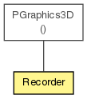

anar
Class Recorder
java.lang.Object
 PGraphics3D
anar.Recorder
PGraphics3D
anar.Recorder
public class Recorder
- extends PGraphics3D

Recorder is converter from Processing graphics to Anar datastructure. It's
used as standard recorder. Currently in Devloppment (not working yet...)
| Constructor Summary |
Recorder(PApplet p5,
java.lang.String exporterName)
|
Recorder(PApplet p5,
java.lang.String exporterName,
java.lang.String filePrefix)
|
| Methods inherited from class java.lang.Object |
equals, getClass, hashCode, notify, notifyAll, toString, wait, wait, wait |
Recorder
public Recorder(PApplet p5,
java.lang.String exporterName)
Recorder
public Recorder(PApplet p5,
java.lang.String exporterName,
java.lang.String filePrefix)
beginDraw
public void beginDraw()
endDraw
public void endDraw()
getAllObjects
public Group getAllObjects()
- Returns:
- the list of all drawn objects within processing since beginRecord();
box
public void box(float w,
float h,
float d)
sphere
public void sphere(float r)
endShape
public void endShape(int mode)